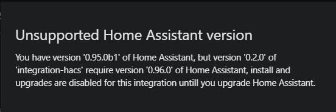

Integration developers¶
A good template to use as a reference is blueprint
Requirements¶
For a integration repository to be valid these are the requirements:
Repository structure¶
- There is only one integration (one directory under
ROOT_OF_THE_REPO/custom_components/) pr. repository (if you have more, only the first one will be managed.) - The integration (all the python files for it) are located under
ROOT_OF_THE_REPO/custom_components/INTEGRATION_NAME/ - There is only one integration (one directory under
ROOT_OF_THE_REPO/custom_components/) per repository (if you have more, only the first one will be managed.) - The integration and all the python files for it are located under
ROOT_OF_THE_REPO/custom_components/INTEGRATION_NAME/
OK example:¶
custom_components/awesome/__init_.py
custom_components/awesome/sensor.py
custom_components/awesome/manifest.py
info.md
README.md
Not OK example (1):¶
awesome/__init_.py
awesome/sensor.py
awesome/manifest.py
info.md
README.md
Not OK example (2):¶
__init_.py
sensor.py
manifest.py
info.md
README.md
manifest.json¶
In the integration directory, there is a manifest.json file.
GitHub releases (optional)¶
If there are releases¶
When installing/upgrading it will scan the content in the latest release.
If there are multiple releases in the repository the user have some options to install a specific version. The choices will be the last 5 releases and the default branch.
If you are using releases you can also set a minimum HA version in the manifest.json file, example:
https://github.com/ludeeus/integration-hacs/blob/0.2.0/custom_components/integration-hacs/manifest.json
{
"homeassistant": "0.96.0"
}
If the user try to install this and the minimum HA requirement is not met, the user will receive a warning and it will block install/upgrade until HA is upgraded.

If there are no releases¶
It will scan files in the branch marked as default.